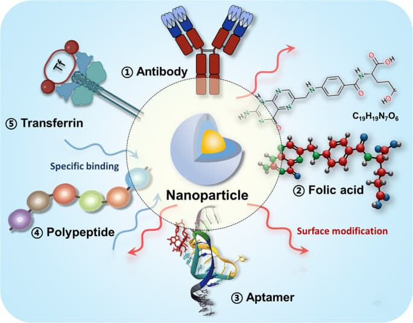
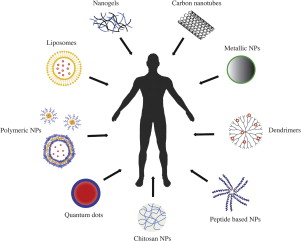
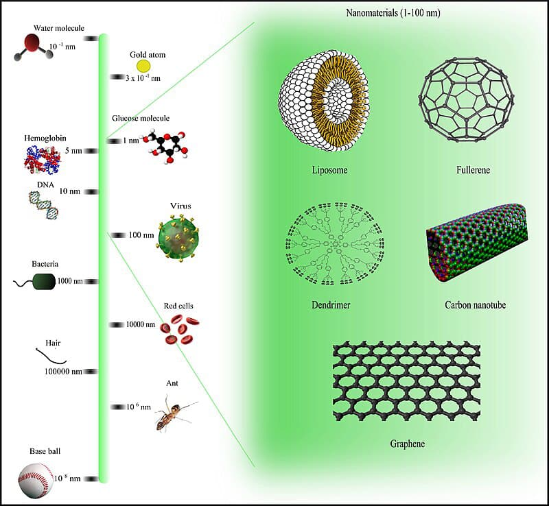

How Nanotechnology is Transforming Medicine
Nanotechnology is revolutionizing medicine by enabling precise drug delivery, early disease detection, and advanced imaging techniques. Nanoparticles can be engineered to target specific cells, reducing side effects and improving treatment efficiency.


